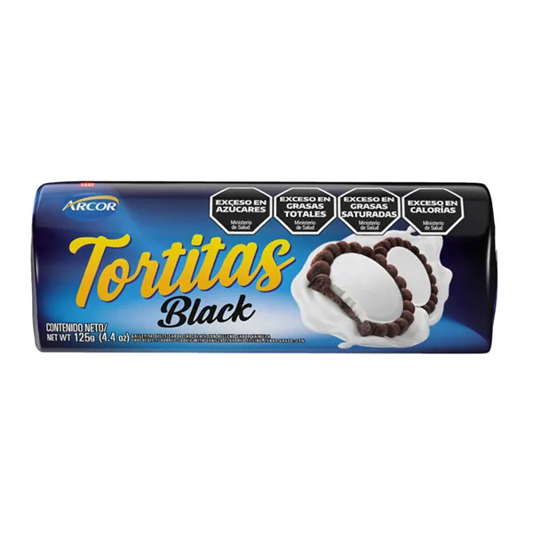

Bienvenidos
Este es el contenido principal de mi página
Soy un chico de 19 años que estudia programación
Las Tortitas Black
Son galletitas dulces, crujientes y rellenas de crema de chocolate. Su sabor intenso y textura suave las hace irresistibles. Perfectas para acompañar café, té o compartir con amigos y familia.